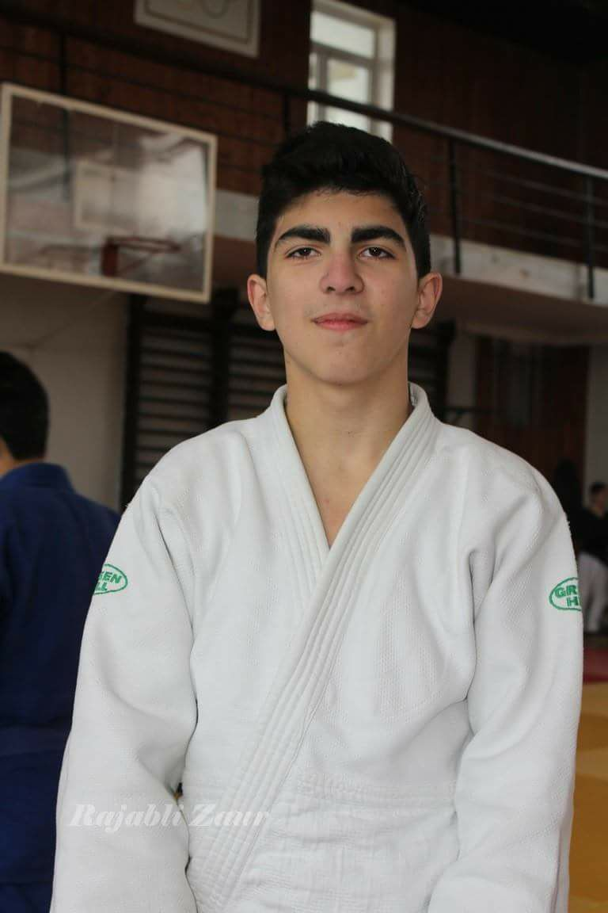

Haqqında
Sədi İsmayılzadə 2003cü il 20 yanvar Sumqayıt şəhərində anadan olmuşdur.
Orta təhsilini Sumqayıt şəhər 33 saylı tam orta məktəbdə almış,buradan məzun olduqdan sonra
Türkiyənin "Namık Kemal Üniversitesi"-nin "Biznesin təşkili və idarə olunması" fakültəsinə daxil
olmuşdur.
Uşaq yaşlarından yaradıcılıqa meyilli olmuş,bu səbəbdən idman,musiqi,incəsənət və texnologiyaya
maraq salmışdır.
11 il cüdo ilə məşğul olmuş,2 dəfə cüdo üzrə Respublika çempionudur.
Musiqi yaradıcılığında isə klassik musiqiyə önəm verən Sədi,yeni nəsil musiqilərədə yer
ayırmışdır.
Hal hazırda "Front-end web development"- olmaq yolunda addımlar atır.